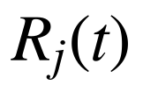
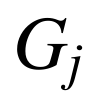
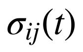
环焊缝缺口应力疲劳分析软件：计算原理、公式与数据流
本软件按 IIW 有效缺口应力法计算管道环焊缝焊趾（1 mm 虚拟圆角）的疲劳寿命。输入是两类数据：ANSYS 局部有限元模型在单位载荷下的焊趾节点应力，和 OrcaFlex 整体动力分析得到的截面内力时程。软件把两者组合成每个焊趾节点的应力时程，再对每个节点完成循环计数、S-N 曲线查算、损伤累积和多轴评定，给出寿命最短的节点。
表 1-1 计算链
| 步骤 | 输入 | 做什么 | 输出 | 界面 |
|---|---|---|---|---|
| 1 建立单位载荷库 | ANSYS 导出 STEP_01～12、坐标、网格 | 读入 12 个单位工况的节点应力；求单位截面内力的影响系数；数据自检 | 影响系数 | 模型页 |
| 2 读入载荷 | OrcaFlex 截面内力 CSV | 识别列与单位（或按列对照）；截取计算时段 | 内力时程 | 载荷页 |
| 3 焊缝截面内力 | OrcaFlex 焊缝处内力 | 直接使用，不做推算和修正 |  | 载荷页 |
| 4 应力重构 |  | 逐节点叠加出 6 个应力分量时程 |  | 计算页 |
| 5 节点评定 | 应力时程、S-N 曲线、材料 | 按方向跟踪的雨流、Miner 损伤；多轴与塑性判别；选定评定方法 | 各方法寿命、评定寿命 | 计算页 |
| 6 结果 | 全部节点 | 排序找出危险节点；导出表格和危险节点报告 | 最短寿命、报告 | 结果页、节点页 |
下列默认值对应 IIW 2024 的推荐做法；每一项都可以在设置页修改，并写入结果文件和报告。
表 1-2 默认设置
| 项目 | 默认值 | 可选 | 说明 |
|---|---|---|---|
| S-N 曲线 | 海水+阴极保护（DNV） | 可同时打开多条：空气（IIW）、海水 70 %（IIW）、自由腐蚀（DNV）、试验曲线、自定义；每条算一组结果 | “S-N 曲线” |
| 材料 | X80 组合自动焊 热影响区 | 全自动焊热影响区、焊缝金属、母材标准最低值、自定义 | “弹塑性判别” |
| 安全系数 | IIW 变幅载荷 D = 0.5 | DNV 立管 DFF = 3、6、10；D = 1.0；自定义 | “安全系数与允许损伤和” |
| 焊缝内力来源 | OrcaFlex 焊缝处（中点）文件 | — | 第 4.3 节 |
| 计算时段 | 全程 | 打开“跳过开头未稳定段”；拖动滑杆或输入起止时间 | “计算时段” |
| 二级子模型截面合力 | 只作检查，不修正 | — | “二级子模型切割面合力修正” |
| 计算线程 | 逻辑核心数的一半 | 1 至全部核心 | “寿命与输出” |
| 雨流残余 | 记录视为重复载荷块 | 只计一次记录 | 第 6 章 |
| 非比例多轴 | IIW Gough-Pollard，CV = 0.5 | MWCM；两者取小 | 第 8、9 章 |
| 缺口屈服节点 | S-N 与应变寿命取小 | 只列出应变寿命 | 第 9.4 节 |
软件内部只有一个坐标系，与 ANSYS 中名为 local 的笛卡尔坐标系一致：z 轴沿管轴，由 A 端（上端，OrcaFlex 弧长较小的一端）指向 B 端（下端）；x、y 为两个径向，与 OrcaFlex 线单元局部 x、y 轴一致。节点周向角
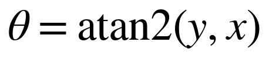
，0° 在 +x 方向。ANSYS 导出的 6 个应力分量必须在 local 坐标系下给出（04 号脚本自动处理）；没有 local 的一级子模型由脚本把全局分量转到 local 方向。
OrcaFlex 输出的截面内力 Fx、Fy、Fz、Mx、My、Mz 是“B 侧对 A 侧的作用”：截面 A 侧这一段所受的、来自 B 侧的力和力矩，Fz > 0 为拉。由此在无分布力矩时：
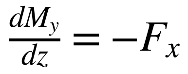 | (2-1) |
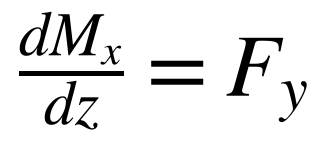 | (2-2) |
把截面内力换成施加在 ANSYS 端面上的外载荷时，A 端（外法线 −z）需反号，B 端（外法线 +z）不变：
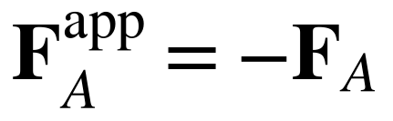 | (2-3) |
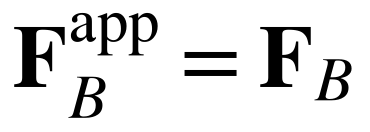 | (2-4) |
表 2-1 单位
| 量 | 软件内部单位 | 说明 |
|---|---|---|
| 力、张力 | kN | OrcaFlex 文件为 N、MN、tf 时在列对照中选单位，自动换算 |
| 力矩 | kN·m | N·m、N·mm、MN·m 自动换算 |
| 应力 | MPa | ANSYS 导出为 Pa 等单位时由脚本换算 |
| 长度 | 管段 m，截面与坐标 mm | |
| 时间 | s；寿命为 h 或年 |
表 2-2 符号说明
| 符号 | 含义 | 单位 |
|---|---|---|
| 焊缝截面第 j 个内力（N、Vx、Vy、Mx、My、T） | kN，kN·m | |
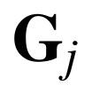 | 单位截面内力引起的节点应力张量（影响系数） | MPa/(kN 或 kN·m) |
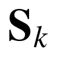 | 第 k 个单位载荷工况的节点应力 | MPa |
| 第 k 个单位工况在焊缝截面产生的第 j 个内力 | kN，kN·m | |
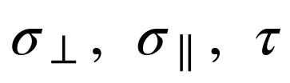 | 焊趾切平面内：垂直焊缝正应力、沿焊缝正应力、剪应力 | MPa |
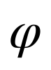 | 方向角（焊趾表面内，自垂直焊缝方向起） | ° |
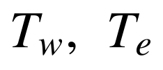 | 壁张力、有效张力 | kN |
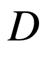 | 允许损伤和 | — |
26 m 全模型在 A、B 两端各施加 6 个单位载荷（力 1000 N、力矩 10⁶ N·mm），共 12 个载荷步，每步只有一个载荷不为零；全模型用惯性释放平衡，三点约束位于焊缝截面；两级子模型（±500 mm、±40 mm）只受切割边界位移。最末一级子模型在两条焊趾的 1 mm 圆角面（命名选择 FAT）上导出节点应力。
表 3-1 ANSYS 导出文件
| 文件 | 由谁生成 | 内容 | 软件用途 |
|---|---|---|---|
| STEP_01_time_1.csv … STEP_12_time_12.csv | 04 号脚本 | body_id、node_id、SX～SXZ（MPa，local） | 12 个工况的节点应力 |
| export_info.txt | 04 号脚本 | 约束位置 constraint_z_mm 等 | 判断是否需要刚体转动修正 |
| nodes_xyz.csv | 05 号脚本 | 节点 local 与全局坐标（mm） | 周向角 θ、三维显示 |
| mesh_quality.csv | 05 号脚本 | 每个表面单元弧向、周向、深度尺寸与长宽比 | 网格尺寸自检 |
| surface_facets.csv | 05 号脚本 | 表面面片 | 三维显示 |
表 3-2 12 个单位载荷（可在新建模型时修改）
| 载荷步 | 1 | 2 | 3 | 4 | 5 | 6 | 7 | 8 | 9 | 10 | 11 | 12 |
|---|---|---|---|---|---|---|---|---|---|---|---|---|
| 位置 | A | A | A | A | A | A | B | B | B | B | B | B |
| 单位载荷 | −FZ | +FX | +FY | +MZ | +MX | +MY | +FZ | −FX | −FY | −MZ | −MX | −MY |
读入时按 (body_id, node_id) 对齐 12 个文件；任一文件缺分量、节点集合不一致或数值非有限都会报错。
全模型两端自由、用惯性释放平衡。均匀管段在端部载荷下的惯性力为沿管长均布的平动部分加线性分布的转动部分，据此可以精确算出每个单位工况在焊缝截面（z = c）产生的 6 个内力  。设施加在两端的外力为
。设施加在两端的外力为
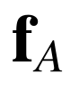
、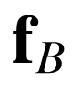
，外力矩为 、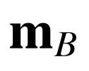
，以管段中点为原点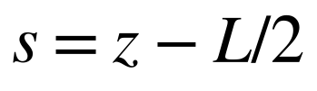
：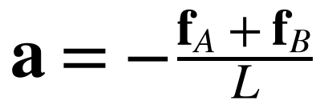 | (3-1) |
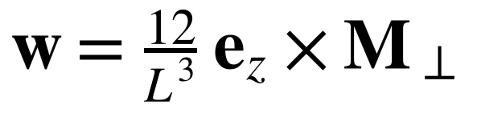 | (3-2) |
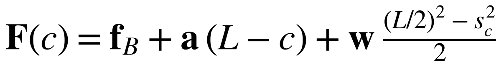 | (3-3) |
式中
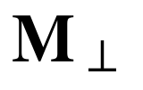
为外载对中点合力矩的横向分量， 为转动惯性力沿管长的梯度。弯矩、扭矩同理积分得到（beam.py 中 ir_cut_resultants）。ANSYS 的 12 个载荷步是 A 端 6 个单位载荷和 B 端 6 个单位载荷，每步导出一个 CSV，内容是每个焊趾节点的 6 个应力分量（SX、SY、SZ、SXY、SYZ、SXZ）。OrcaFlex 给的是焊缝截面的 6 个内力（Fx、Fy、Fz、Mx、My、Mz）。两者的联系是：
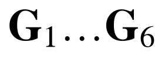
，每组对每个节点都有 6 个应力分量，共 6 × 6 = 36 个数。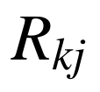
可以用静力学精确算出（上一节），例如 A 端 −FZ 1 kN 在焊缝截面产生 0.5 kN 轴力（惯性释放下两端各承担一半），A 端 +FX 1 kN 产生 0.25 kN 剪力和 3.25 kN·m 弯矩。于是每个载荷步的节点应力都是 6 组 G 的组合：
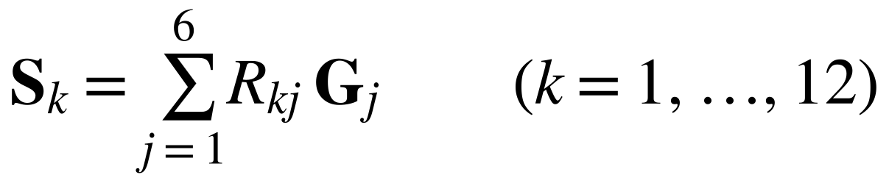 | (3-4) |
这里 12 个方程、6 个未知量 G。只用 A 端的 6 步就能解出 G，B 端的 6 步是多余的，用来检查：软件用全部 12 步做最小二乘，多余的方程既能平均掉有限元的数值误差，又能给出检验指标。残差
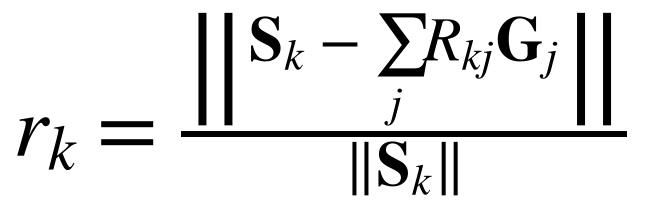 | (3-5) |
就是模型页的“两端工况一致性”，应小于 1 %。2026-11-18 的库中 12 步的残差都不超过 0.06 %；只用 A 端 6 步或只用 B 端 6 步求 G，三处危险节点的寿命与用 12 步相比分别相差 −0.3 %～+1.6 % 和 −0.6 %～+1.1 %，说明两端的结果互相印证。
计算时，某一时刻每个节点的 6 个应力分量为
 | (3-6) |
 是 OrcaFlex 焊缝截面的 6 个内力。注意不是“6 个应力分量对 6 个内力”一一相乘：每一个内力都会引起全部 6 个应力分量，6 个内力各自乘以自己的那一组 G 后相加。早期“两端 12 个内力乘 12 个单位工况”的做法等于先用两端内力推算焊缝截面内力，再乘 G，推算忽略了管段上的分布载荷，所以现在改为直接用焊缝截面的 6 个内力。
是 OrcaFlex 焊缝截面的 6 个内力。注意不是“6 个应力分量对 6 个内力”一一相乘：每一个内力都会引起全部 6 个应力分量，6 个内力各自乘以自己的那一组 G 后相加。早期“两端 12 个内力乘 12 个单位工况”的做法等于先用两端内力推算焊缝截面内力，再乘 G，推算忽略了管段上的分布载荷，所以现在改为直接用焊缝截面的 6 个内力。
若三点约束不在焊缝截面，子模型切割边界上会叠加焊缝截面的刚体转动位移，插值误差变成与转角积分成正比的虚假应力。软件用扩展模型检验并扣除：
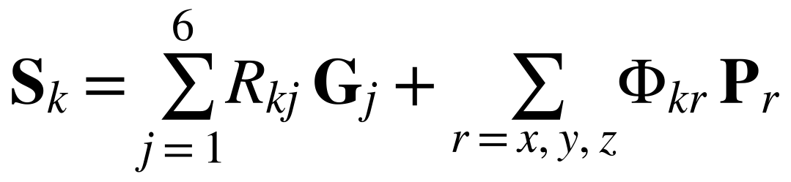 | (3-7) |
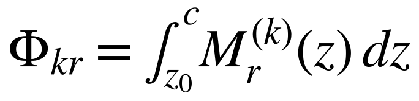 | (3-8) |
约束位于焊缝截面时
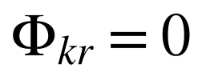
，软件显示“无需修正”，单位库不作任何改动。子模型的切割面按上一级模型的位移加载。二级子模型含焊缝（余高、根部），比不含焊缝的一级子模型（光管）刚，在同样的边界位移下会多传递一部分截面合力，焊趾应力随之偏大。由于焊趾应力与所传递的截面合力成正比（圣维南原理），软件用 02、03 号脚本导出的截面圆环应力（L1_sub500_planes.csv、L2_fillet_planes.csv）积分出两级模型在同一截面 z 上传递的合力。外、内表面的拟合系数
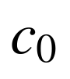
、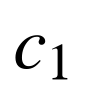
、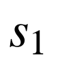
沿壁厚线性插值：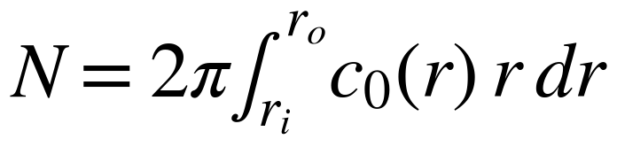 | (3-9) |
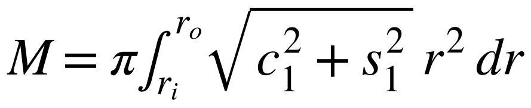 | (3-10) |
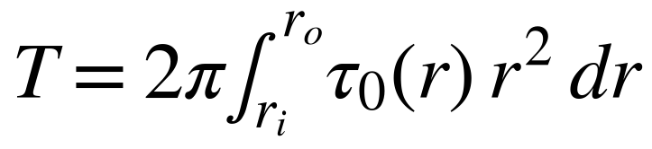 | (3-11) |
对每个单位工况取主合力（轴力步取 N，扭矩步取 T，其余取 M），修正系数为离焊缝中心 ≥ 22 mm 的各比较截面上两级合力之比的中位数：
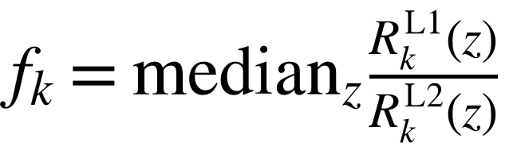 | (3-12) |
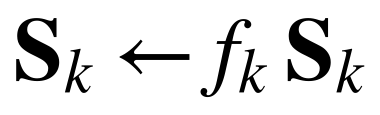 | (3-13) |
2026-11-18 的数据给出轴力 −1.7 %、弯矩 −1.9 %、扭矩 −3.2 %，各截面离散约 1 %。修正系数超出 0.85～1.15 时软件不修正并提示核查。这一修正只消除整体合力的偏差；切割面附近外表面偏高、内表面偏低的局部弯曲（一级子模型没有焊缝造成）不能由此消除，使焊趾应力偏大约 1 %（寿命偏短约 3 %～4.5 %，偏安全）；在一级子模型中也建出焊缝外形可消除。
焊趾节点在自由表面上，表面法向 n 上的牵引力为零： 对所有工况成立。软件把 12 个工况的应力张量（按工况归一）排成矩阵，取最小奇异值对应的右奇异向量为 n；最小与最大奇异值之比即“表面法向识别”自检值。切平面内取
对所有工况成立。软件把 12 个工况的应力张量（按工况归一）排成矩阵，取最小奇异值对应的右奇异向量为 n；最小与最大奇异值之比即“表面法向识别”自检值。切平面内取  = 管轴 z 在切平面上的投影（垂直焊缝方向），
= 管轴 z 在切平面上的投影（垂直焊缝方向），
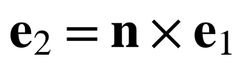
（沿焊缝方向）。识别准则为
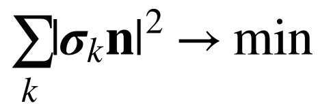
（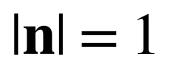
）。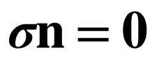
是张量方程，整体坐标系旋转后识别出的是同一物理方向，结果与坐标系取向无关；只要求 12 个工况在同一坐标系下导出，且 z 轴沿管轴（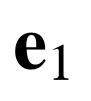
由它定义）。工况不足以唯一确定法向时（如只有轴向拉伸的试件模型），改用表面面片的几何法向。自由表面的依据：重力、浮力、静水压力和波流力由 OrcaFlex 整体模型计入焊缝截面内力，ANSYS 局部模型焊趾表面不加荷载。焊趾表面直接受到的静水压力和内压不随时间变化，只影响平均应力（焊态接头不考虑），动水压力和分布拖曳力相对焊趾应力范围可以忽略。因此焊趾处为平面应力状态，局部坐标下
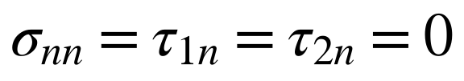
，只剩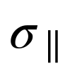
、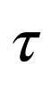
。计算顺序：建库时由 12 个工况求 6 组影响系数  ；每个时刻先叠加
；每个时刻先叠加
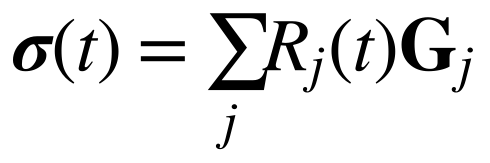
（整体坐标 6 个分量），再投影得到该时刻的一组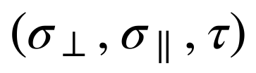
。叠加与投影都是线性运算，次序可交换。表 3-3 模型页数据自检
| 自检项 | 判据 | 含义 |
|---|---|---|
| 表面法向识别 | < 0.10 | 节点确实位于自由表面；数值过大说明导出的不是表面节点或未做节点平均 |
| 缺口应力集中系数 | 轴力与弯曲相差 < 5 % | 薄壁管外表面轴力与弯曲名义应力分布相同，Kt 应相近 |
| 纯扭矩工况 σ/τ | < 0.10 | 轴对称焊缝受纯扭只有剪应力 |
| 纯轴力工况 τ/σ | < 0.10 | 受纯轴力只有正应力 |
| 上下端轴力工况一致 | < 1 % | 两端拉力在焊缝产生相同轴力 |
| 刚体转动误差 | 约束在焊缝截面时无需修正 | 第 3.4 节 |
| 两端工况一致性 | < 1 % | 第 3.3 节残差 r |
| 二级子模型切割面合力 | 修正系数 0.85～1.15 | 第 3.5 节 |
| 焊趾网格尺寸 | 弧向、深度 ≤ 0.17 mm；周向 ≤ 2 mm | IIW 对一次单元 r/6 的要求 |
验证试验用的平板或短管试件，在“新建模型”对话框中选“试件模型”。ANSYS 中固定试件一端，在另一端（加载端）施加单位载荷，平板轴向拉伸试验只需要 1 个载荷步：1 kN 轴向拉力。需要弯矩等其他分量时继续增加载荷步，每步一个分量。
建库时填写截面（平板填板宽和板厚，圆管填外径和壁厚）和加载端到焊缝的距离。方向“+”表示该载荷步使焊缝截面受正内力，轴向力为拉。焊缝截面内力按静力平衡给出：力不变，弯矩 ，
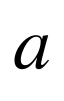
为加载端到焊缝的距离。工况很少时（如只有轴向力），焊趾附近接近单向应力，仅凭应力张量无法唯一确定表面法向。这时软件改用导出的表面面片（surface_facets.csv）和节点坐标求几何法向，再投影到零牵引平面内，所以试件导出时必须带上这两个文件。
表 3-4 试件模型数据自检
| 自检项 | 判据 | 含义 |
|---|---|---|
| 缺口应力集中系数 | 1.5～4 | 1 kN 轴力下焊趾最大缺口应力与 F/A 之比 |
| 轴力工况剪应力 | τ/σ < 0.10 | 对接焊缝受拉时焊趾以正应力为主 |
| 轴力方向 | 拉 | 显示“压”说明 ANSYS 中力的方向与建库时填写的方向相反 |
每个截面一个 CSV（或制表符、空格分隔的 TXT）。软件按列名识别 8 个量：时间、Fx、Fy、Fz（壁张力）、Mx、My、Mz、有效张力（可选），并由列名中的单位（kN、N、kN·m、N·m 等）换算。识别失败或需要核对时，在载荷页文件卡片下方点“列对照”，把文件的列拖到对应的量上并选单位；对照关系随工况保存，计算和报告都按对照后的数据。读入时检查：时间单调递增、数值有限、一列不能对应两个量。
表 4-1 列名
| 量 | 推荐列名 | OrcaFlex 变量 | 单位 |
|---|---|---|---|
| 时间 | Time_s | Time | s |
| Fx、Fy | Fx_local_kN、Fy_local_kN | x / y Shear Force | kN |
| Fz | Fz_wall_kN | Wall Tension | kN |
| Te（可选） | Te_effective_kN | Effective Tension | kN |
| Mx、My | Mx_local_kNm、My_local_kNm | x / y Bend Moment | kN·m |
| Mz | Mz_torque_kNm | Torque | kN·m |
只有两列的文件（第一列时间，第二列轴向力）按试验机记录处理：第二列为焊缝截面轴力 Fz，其余 5 个分量为 0，单位按列名识别（kN、N），识别不出时按 kN。常幅试件取稳定加载后连续若干个完整循环，变幅试件取一个完整载荷块。软件给出的寿命
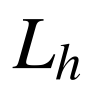
（h）按下式换算为循环数或块数，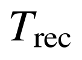
为文件时长（s）， 为文件包含的循环数或块数：| (4-1) |
应力计算用壁张力 （Wall Tension），即管壁截面上的真实轴向合力，与 ANSYS 单位载荷中的轴力含义相同。有效张力 是 OrcaFlex 内部求整体变形用的量，含内外压力的作用，不是管壁的真实轴力，计算中不用它。
立管悬挂在船上，船通过张紧器或悬挂点向上拉住立管，立管自身的重量（扣除浮力）和底部设备的重量都由顶部承担。因此整根立管处处受拉，顶部（弧长 0 m）拉力最大，向下逐渐减小。2026-11-18 的数据中壁张力从 0 m 处约 1840 kN 降到 900 m 处约 190 kN，平均每米减少约 1.8 kN（壁张力的变化率等于管子单位长度在空气中的重量）。OrcaFlex 约定拉为正、压为负，全为正值是正常的。
焊趾应力只取决于焊缝截面的 6 个内力 （圣维南原理：焊缝离单位载荷施加端 13 m，远大于管径）。所以计算需要的只是焊缝截面内力时程  ，由 OrcaFlex 在焊缝所在弧长处直接输出，软件不做任何推算或修正。
，由 OrcaFlex 在焊缝所在弧长处直接输出，软件不做任何推算或修正。
OrcaFlex 是非线性整体分析：大张力、大位移、水动力都已包含在它算出的截面内力中。ANSYS 模型是线性的，只负责“截面内力 → 焊趾应力”这一步。在 ±40 mm 的局部范围内，张力对弯曲的影响（特征长度 约 4 m）可以忽略，线性叠加成立。因此只要焊缝截面内力取自 OrcaFlex，ANSYS 不考虑张力是正确的，不需要任何“张力修正”。
早期版本在只有管段两端内力时用插值推算焊缝内力。管段上有重力、浮力、波流力，上部管段靠近悬挂点弯矩在约 4 m 内急剧衰减，由两端推算的焊缝弯矩误差达 1～9 倍。现在软件只接受焊缝处输出；只选两端文件时会提示缺少焊缝处数据。立管每 13 m 一道焊缝、几何相同，共用同一个单位载荷库；要评定哪一道，只需要该焊缝弧长处的输出。
各道焊缝相互独立。例如 0～26 m 管段中点 13 m 处的焊缝，只用 OrcaFlex 在 13 m 处输出的内力计算；26 m 处另有一道焊缝时，用 26 m 处的输出、同一个单位载荷模型再算一次即可。0 m 和 26 m 两端的内力不影响 13 m 焊缝的结果，同理 13 m 和 39 m 的数据也不影响 26 m。ANSYS 模型中的 26 m 管段只是把单位载荷传到焊缝的载体，焊缝离两端足够远，端部的约束和加载方式不影响焊趾应力。载荷页上端、下端两个文件可不选，选了只用来显示“两端推算”与焊缝截面输出的差别。
默认计算整段记录。载荷页的时段滑杆下方标有整数刻度，拖动时靠近刻度自动吸附（按住 Shift 可自由拖动），也可以直接输入起止时间。OrcaFlex 动力计算开头的一段时间内海况、结构响应可能尚未稳定，软件读入文件后自动识别这一段，需要时打开“跳过开头未稳定段”。识别方法：把记录按 200 s 分块，以后一半记录的均值 m 和标准差 s 为参照，找出最后一个不满足下列条件的块，从它的下一块开始：
| (4-2) |
| (4-3) |
各分量先换算成名义应力量级，对应力贡献不到最大分量 5 % 的分量不参与判断；结果取整到 100 s。寿命按实际计算时长换算。批量导入时可在对话框中统一打开或关闭这一项，并逐个修改起止时间。
每个节点、每个时刻的应力张量由焊缝截面内力与影响系数叠加：
| (5-1) |
内部也可以等价地写为 ，叠加系数 ，、，两种写法结果相同（已由测试验证）。切平面内的三个分量为：
| (5-2) |
| (5-3) |
| (5-4) |
计算按 32 个节点一组分块进行，内存占用与节点数无关。
先提取峰谷序列，再按 ASTM E1049-85 第 5.4.4 节的三点栈算法计数：栈顶三个点构成范围 X（最新）与 Y（前一个），X ≥ Y 时计一次范围为 Y 的循环（Y 含起点时计半次）。记录结束时栈中剩余的范围称为残余。
表 6-1 残余处理
| 残余处理 | 做法 | 适用 |
|---|---|---|
| 记录视为重复载荷块（默认） | 把峰谷序列从绝对值最大的点处切开、首尾相接后计数，全部循环闭合，不留半循环 | 一段记录代表一种海况会反复出现 |
| 只计一次记录 | 残余中每个范围按 0.5 次计（ASTM 做法） | 只评估这一段记录本身 |
| (6-1) |
为一段记录的损伤， 为第 i 个范围的循环数（1 或 0.5）， 由 S-N 曲线给出。
横坐标一律为应力范围。双斜率曲线：
| (7-1) |
| (7-2) |
由 FAT 值（2×10⁶ 次对应的范围）定义时 。
表 7-1 内置曲线
| 环境 | 正应力 | 剪应力 | 拐点后 | 依据 |
|---|---|---|---|---|
| 空气 | FAT225，m = 3 | FAT160，m = 5 | 正应力 10⁷ 次后 m = 5；剪应力 10⁸ 次后 m = 9 | IIW 2024 有效缺口应力 r = 1 mm |
| 海水 · IIW | FAT157.5，m = 3 | FAT112，m = 5 | 无拐点 | IIW §3.5.5：抗力 70 %，不设疲劳极限 |
| 海水 + 阴极保护 · DNV | log a = 12.958，10⁶ 次后 log a = 17.596、m = 5 | 同海水 · IIW | 见左 | DNV-RP-C203 表 E-1 |
| 海水自由腐蚀 · DNV | log a = 12.880，m = 3 | 同海水 · IIW | 无拐点 | DNV-RP-C203 表 E-1 |
缺口应力法的 S-N 曲线由 IIW 给出，空气中为 FAT225。IIW 只规定了海洋环境按 70 % 折减（“海水 · IIW”），没有给出阴极保护下的曲线。DNV-RP-C203 附录中给出了同一方法（r = 1 mm 有效缺口应力）在空气、海水 + 阴极保护、自由腐蚀三种环境下的曲线，空气曲线与 IIW FAT225 相同（log a = 13.358）。立管在海水中且有阴极保护，所以“海水 + 阴极保护”选用 DNV 曲线；它与 IIW 是同一套缺口应力法，只是补上了 IIW 没有的环境曲线。这些曲线构成软件的 S-N 曲线库。
“海水 · IIW 70 %”与“海水自由腐蚀 · DNV”几乎重合：正应力曲线 log C 分别为 12.893 和 12.880，寿命相差约 3 %，DNV 略保守。软件以 IIW 为基础，自由腐蚀用 IIW 曲线即可；DNV 曲线保留，供按 DNV 体系校核时对照。
设置页是曲线库，用来查看、新建和编辑曲线。参与计算的曲线在计算页勾选，每条勾选的曲线算一组结果，在结果页上方切换。验证试验完成后，在试验页点“试验曲线存入曲线库”，把常幅试验拟合的特征值曲线（95 % 存活率、75 % 置信度）加入曲线库，即可选用。
海水 + 阴极保护曲线拐点后的 由两段在 10⁶ 次处连续求出，为 17.5967；DNV 表列值 17.596 是四舍五入值，两者寿命相差约 0.15 %。
设置页可以新建自定义曲线（FAT 值或 log C、斜率、拐点、拐点后斜率），自定义曲线与内置曲线同样参与计算并写入报告。曲线名称不能与已有曲线（含内置曲线）相同。选中自定义曲线后按 Delete 键删除；新建、编辑、删除都可以按 Ctrl+Z 撤销、Ctrl+Y 恢复。曲线列表在固定高度的框内滚动，曲线多时页面长度不变。
曲线依据：空气曲线为 IIW 有效缺口应力 FAT225 / FAT160；海水曲线按 IIW 第 3.5.5 节取空气曲线的 70 %，不设拐点；海水加阴极保护、海水自由腐蚀取 DNV-RP-C203 附录 E 表 E-1 的缺口应力曲线。DNV 附录 E 与 IIW 同为 r = 1 mm 有效缺口应力法，其空气曲线（lg a = 13.358，m = 3）即 FAT225，两者可以配合使用。
Miner 累积损伤达到允许值 D 时判为开裂。设置页“安全系数（规范）”提供以下选项，也可以选“自定义”直接填 D：
表 7-2 允许损伤和
| 选项 | D | 依据与用途 |
|---|---|---|
| IIW 变幅载荷（默认） | 0.5 | IIW 第 4.2.3 节：变幅载荷的规定损伤和 0.5 |
| DNV-ST-F201 立管，DFF = 3 | 1/3 | 低安全等级 |
| DNV-ST-F201 立管，DFF = 6 | 1/6 | 中安全等级 |
| DNV-ST-F201 立管，DFF = 10 | 0.1 | 高安全等级 |
| Miner 理论值 | 1.0 | 与疲劳试验结果对比时使用（试验寿命对应 D = 1） |
寿命与 D 成正比，改变 D 不需要重新计算，结果页即时更新。
IIW 规定焊趾缺口处用最大主应力评定。软件在焊趾表面内对方向角 φ 搜索（0° 为垂直焊缝方向），每个方向上的正应力时程为：
| (8-1) |
对每个方向的带符号正应力做雨流计数和 Miner 累积，损伤最大的方向为评定方向；比例加载时它就是主方向（疲劳文献中把以它为法向的平面称为临界平面）。搜索先每 10° 取一个方向，再在最大值附近用黄金分割细化到约 0.1°。这样做保留了应力的正负号和方向，避免逐时刻最大主应力 直接计数把压缩半周截掉、把不同方向的应力拼在一起。
对焊缝面剪应力 雨流计数，用剪应力 S-N 曲线（FAT160）计算损伤。
分别求 和  的单次记录损伤 、，允许的记录重复次数 R 满足：
的单次记录损伤 、，允许的记录重复次数 R 满足：
| (8-2) |
比例加载 CV = 1.0，非比例加载 CV = 0.5（钢，IIW 表 4.2）。R 用对数尺度二分求解；寿命为 R 乘以记录时长。
在剪应力方差最大的面上评定（Susmel 2014）。由 6 个应力分量的协方差矩阵 C，对每个面法向 n 和面内方向 q，剪应力方差为 ，先在 400 个近似均匀的半球方向上粗搜，再用模式搜索细化。应力比与修正曲线为：
| (8-3) |
| (8-4) |
| (8-5) |
 不超过 。空气中取 = 225 MPa、k = 3、 = 160 MPa、 = 5； = 1 时退化为主应力法，
不超过 。空气中取 = 225 MPa、k = 3、 = 160 MPa、 = 5； = 1 时退化为主应力法， = 0 时退化为剪应力法（均已验证）。
= 0 时退化为剪应力法（均已验证）。
逐时刻最大主应力特征值直接雨流计数。只作对照，不参与评定。
正应力、剪应力的波动幅度按方差定义（Susmel 2014），与具体 S-N 曲线无关：
| (9-1) |
| (9-2) |
主方向转动范围 ：切平面内应力波动部分的主方向在记录中转过的角度范围，只统计幅值不小于最大值 20 % 且两个主应力明显不等的时刻。
表 9-1 评定方法选择
| 应力状态 | 判别条件 | 评定方法 | 依据 |
|---|---|---|---|
| 单轴主导 | Δτ ≤ 0.15 Δσ⊥ | 主应力法 | IIW §4.1(a) |
| 剪切主导 | Δσ⊥、Δσ∥ ≤ 0.15 Δτ | 剪应力法 | IIW §4.1(a) |
| 比例多轴 | 其余，且 Δφ1 < 20° | 主应力法与 Gough-Pollard（CV = 1）取小 | IIW §4.1(b) |
| 非比例多轴 | 其余，且 Δφ1 ≥ 20° | 默认 Gough-Pollard（CV = 0.5）；可选 MWCM 或两者取小 | IIW §4.1(c)；Susmel 2014 |
每个节点都会算出全部方法的结果（判别本身需要这些量，也便于对照），但只取上表中对应的一个作为评定寿命。
非比例多轴节点用哪种方法：IIW Gough-Pollard 是规范方法，CV = 0.5 偏保守，用于设计校核；MWCM 在剪应力方差最大的面上同时考虑剪应力和正应力，Susmel（2014）用 r = 1 mm 缺口应力试验数据标定，对非比例加载试验的预测误差更小，与试验对比时可选用；“两者取小”最保守。
表 9-2 弹塑性状态
| 状态 | 条件 | 处理 |
|---|---|---|
| 弹性 | 缺口 von Mises 应力最大值 ≤ | 按上表 |
| 缺口局部屈服 | > | 另算应变寿命，与 S-N 结果取小（默认） |
| 缺口循环塑性 | 评定方向正应力范围 > | 同上；结果需结合试验判断 |
 为屈服强度（API 5L 对 X80 管线钢规定为总延伸 0.5 % 时的应力）， 为抗拉强度。焊趾裂纹萌生在热影响区，默认材料取组合自动焊热影响区的实测值（
为屈服强度（API 5L 对 X80 管线钢规定为总延伸 0.5 % 时的应力）， 为抗拉强度。焊趾裂纹萌生在热影响区，默认材料取组合自动焊热影响区的实测值（ = 551 MPa），在两种焊接工艺中最低，塑性判别最保守；已知焊接工艺时选对应的热影响区。材料只用于弹塑性判别、屈服节点的应变寿命和名义应力适用范围检查，S-N 曲线给出的寿命与材料无关。
= 551 MPa），在两种焊接工艺中最低，塑性判别最保守；已知焊接工艺时选对应的热影响区。材料只用于弹塑性判别、屈服节点的应变寿命和名义应力适用范围检查，S-N 曲线给出的寿命与材料无关。
对评定方向正应力的每个雨流循环，用 Neuber 法则和 Masing 型循环曲线求局部应力、应变范围，再按 SWT 参数求寿命：
| (9-3) |
| (9-4) |
为线弹性计算的范围；材料参数在设置页材料表中查看和修改。
IIW 缺口应力法要求焊缝截面名义应力最大值不超过屈服强度、名义应力范围不超过 1.5 倍屈服强度。超出时结果页以红色提示，S-N 法不再适用。
寿命以“该段记录反复作用的小时数”给出：
| (10-1) |
Gough-Pollard 方法中 换成允许重复次数 R。年寿命为 ， 为该工况每年作用的小时数，默认取全年 8766 h；只有一个工况时不用修改。填写设计年限后，结果中给出年寿命是否不低于设计年限。全部节点中评定寿命最短者为危险节点。
一个载荷工况（一道焊缝的一段载荷记录）就是一个任务，保存为一个文件“工况名.nftask”，其中包含该工况在各条 S-N 曲线下的全部节点结果、计算设置、载荷时程和所用的单位载荷模型。在结果页“打开任务”（可多选）、把文件拖进窗口，或把文件拖到程序图标上即可打开，不需要原模型文件，也不需要重新计算；结果页上方切换 S-N 曲线。旧版文件（每个环境一个文件，*.nftask 或 *.nfres.npz）仍可打开。
计算页的队列按顺序计算：可上移、下移、删除工况；“暂停”在当前这一组算完后暂停，“停止”立即中止当前这一组，已完成的结果保留。完成的工况旁有“查看结果”，点击转到该工况的结果。计算线程在计算页选择，默认用逻辑核心数的一半，计算期间电脑仍可流畅使用；选全部核心最快。每组约占 0.3 GB 内存。
结果页“寿命沿圆周分布”的极坐标图和展开图都给出每个焊趾每 1° 的最短寿命，每个焊趾一条曲线。极坐标图的半径为对数寿命，圆心附近为最短寿命所在量级，外圈为最长寿命所在量级，最长寿命超过最短寿命 8 个量级时外圈标“≥”。展开图中打开“全部节点”，以淡色点画出焊趾上每个节点的寿命：沿缺口圆弧有 7 排节点，离缺口底部越远寿命越长，点呈若干条平行的带，曲线即最下面一条。工况下拉框展开后，点每一项右侧的 × 关闭该工况，即从软件中移除，不删除文件。危险节点表按应力状态、弹塑性状态筛选，每类列出寿命最短的 5 个。
表 10-1 输出
| 输出 | 位置 | 内容 |
|---|---|---|
| 任务文件 *.nftask | 结果文件夹，计算完自动保存；结果页“另存为” | 全部节点结果、设置、载荷和所用模型，拷到其他电脑可直接打开 |
| Excel | 结果页 | 全部节点的各方法寿命、判别量与列说明 |
| 危险节点报告 | 结果页“导出危险节点报告” | 按工程计算报告格式给出危险节点从输入到寿命的全过程 |
三维页把焊缝重建出来，在焊趾上按节点结果着色，可以绕焊缝一周扫描，并显示所选周向位置的焊趾应力时程。三维页只做显示，所有数值与结果页、节点页相同，不参与计算。
坐标原点在焊缝中面的管轴上。X、Y 为截面局部坐标（与 ANSYS、OrcaFlex 局部坐标一致），Z 沿管轴指向下端。周向角 θ 从 +X 起算，转向 +Y 为正。+Z 指向管段 z = L 端（例如 0～26 m 管段的 26 m 端），−Z 指向 z = 0 端。z < 0 一侧的焊趾称 −Z 侧焊趾，z > 0 一侧称 +Z 侧焊趾。两侧焊趾的最短寿命常出现在同一周向位置，是因为该处弯曲拉应力最大。管体不透明度同时作用于管体和剖切面，调到 0 时只显示焊趾和环带。双击模型上的一点，以该点为旋转中心。结果页的极坐标图按钟表方向绘制：0° 朝上、顺时针增大，越靠近圆心寿命越短。
表 11-1 几何数据
| 部分 | 数据 | 说明 |
|---|---|---|
| 焊趾（着色面） | 05 号脚本：nodes_xyz.csv、surface_facets.csv | FAT 面上的真实网格，每个节点按其结果着色 |
| 管体、余高、根部、切割面 | 07 号脚本：weld_profile_nodes.csv、weld_profile_faces.csv | 0°、90°、180°、270° 四个子午截面的网格 |
| 没有 07 数据时 | 管径、壁厚 + 焊趾圆角节点 | 余高按 2 mm、根部平齐的示意外形，界面上注明“示意” |
截面轮廓：有单元面时，只被一个单元面使用的边就是截面外轮廓；只有节点时沿轴向分段取最大、最小半径。轮廓绕管轴旋转得到三维外形，四个截面之间按周向角线性插值，所以错边、余高沿周向的变化会显示出来。
由每个截面的轮廓自动求出下列量，显示在三维页右侧和模型页，用于核对有限元模型与实际焊缝是否一致：
表 11-2 几何参数
| 量 | 定义 |
|---|---|
| 余高 | 外表面最高点高出两侧管外表面的距离 |
| 焊缝宽度 | 外表面高出管表面 0.005 mm 以上的轴向范围（两焊趾间距） |
| 焊缝侧面角 | 从焊趾向焊缝中心，外表面由余高 25 % 升到 75 % 的平均坡度角 |
| 根部凸出 | 内表面低于两侧管内表面的最大距离 |
| 错边 | 远离焊缝处（模型两端 20 % 范围）上端侧与下端侧管外（内）半径之差 |
| 壁厚 | 远离焊缝处的外半径减内半径，左右分别给出 |
表 11-3 着色模式
| 模式 | 节点值 | 色标 |
|---|---|---|
| 评定寿命 | 评定寿命（填写年作用小时后为年） | 对数刻度，红色最短；上限取最短寿命的 10⁴ 倍或实际最大值 |
| 应力状态 | 单轴主导 / 剪切主导 / 比例多轴 / 非比例多轴 | 分类颜色，与结果页一致 |
下方左图是两条焊趾每 1° 内最不利节点的曲线，拖动竖线选择周向位置；右图是该位置焊趾垂直焊缝方向的正应力：
| (11-1) |
式中 为第 k 个驱动量在焊趾切平面内垂直焊缝方向的应力， 为该驱动量的时程，与计算内核的叠加相同。默认显示前 300 s，可输入起止时间。
FAT 圆角只有约 0.4 mm 宽，在整体视图里几乎看不见。软件在焊趾外侧的管表面画一条可调宽度的环带，颜色取该 1° 范围内最不利节点的值。环带只为显示，宽度不代表真实尺寸。
试验页用于验证试验：定义接头形式，录入试件的试验结果，由软件计算每个试件的预测寿命和危险焊趾线，并按文档 04《焊缝疲劳分析软件验证试验任务计划书》的判定标准评定。页面上方的四个步骤就是使用顺序。记录自动保存在结果文件夹的“试验记录.json”中，下次打开软件时恢复。
每种焊接接头形式一行，数量不限，用“新建接头形式”增加，双击一行编辑。每种接头填写焊缝余高、宽度、坡口角度和错边量，这些尺寸只作记录；计算依据是该接头的试件模型，即按实测焊缝几何建立的试件有限元模型导出的单位载荷结果，在模型页以“试件模型”新建。选了试件模型时，Kt 由模型给出，软件对每个试件完整计算；规划阶段还没有试件模型时，可以先手填 Kt，按缺口应力估算。
“添加试件”选择接头形式后加入一行，试件号按接头形式自动编号：第一种接头为 1-1、1-2……，第二种为 2-1、2-2……，删除后再加入时接着最大的序号编。白色列由试验填写，灰色列由软件计算，不能手改：
表 12-1 试件记录的各列
| 列 | 填写或计算 | 说明 |
|---|---|---|
| 试件号、接头形式 | 填写 | 自动给出，可修改；接头形式在单元格中下拉选择 |
| 名义应力范围、应力比 | 填写 | 名义应力为平行段横截面上的平均应力，即轴向力除以截面积 |
| 试验寿命 | 试验后填写 | 试件断裂时的循环次数；未断裂的填停止时的循环次数，并选“越出” |
| 断裂 / 越出 | 试验后填写 | 越出试件不参与寿命统计 |
| 起裂焊趾线 | 断口检验后填写 | 盖面左、盖面右、根部左、根部右或其他；左为打钢印的一端，对应试件模型中 z 较小的一侧 |
| 载荷文件 | 可选 | 试验机记录的载荷文件，时间和轴向力两列；不选时按名义应力范围和应力比生成常幅正弦载荷 |
| Kt、预测寿命、危险焊趾线 | 软件计算 | 有试件模型时由模型完整计算；预测寿命为中值寿命 |
| 寿命比、位置一致 | 软件计算 | 寿命比 = 试验寿命 ÷ 预测寿命；位置一致比较起裂焊趾线与危险焊趾线 |
选中行按 Delete 删除，Ctrl+Z 撤销；接头形式的新建、编辑、删除也可以撤销。也可以把试件记录导出为 Excel，填写后再导入。
有试件模型时，软件用该模型和载荷文件，或按名义应力范围、应力比生成的常幅载荷，执行与其他模型相同的完整计算，得到危险节点寿命  ，换算为循环次数：
，换算为循环次数：
| (12-1) |
为载荷时长（s）， 为其中的主循环数，按轴向力雨流计数、只数范围不小于最大范围一半的循环；乘 由设计曲线寿命换算为中值寿命， 为寿命常用对数的标准差，默认 0.20。危险焊趾线由危险节点在模型中的位置确定：板厚方向两面中焊趾离焊缝中面较远的一面为盖面，z 较小的一侧为左。没有试件模型时：
| (12-2) |
| (12-3) |
| (12-4) |
| (12-5) |
| (12-6) |
越出试件和起裂位置为“其他”的试件不参与寿命统计。“对比计算”按接头形式分组给出评定表；接头形式多于两种时，接头形式的影响以第一种为基准，与其余各种逐一比较。判定标准与文档 04 相同：
表 12-2 试验评定标准
| 检验内容 | 判定标准 |
|---|---|
| 起裂位置 | 每种接头至少 80 % 的试件裂纹萌生在软件危险焊趾线上，5 件时为 4 件 |
| 每种接头的寿命 | 寿命比几何平均值 0.5～2.0，单件 0.33～3.0 |
| 接头形式的影响 | λt 与 λp 之比 0.5～2.0，且同时大于 1 或同时小于 1 |
用已破坏的试件估计试验 S-N 曲线，斜率固定为 3：
| (12-7) |
| (12-8) |
| (12-9) |
| (12-10) |
| (12-11) |
k 为 95 % 存活率、75 % 置信度的单侧容限系数（非中心 t 分布），n = 10 时 k = 2.10，n = 20 时 1.93。同时给出自由斜率的最小二乘结果和 μ − 2s 的值作对照。 不低于软件采用的 FAT 值，说明设计曲线偏于安全。
每一步都用与软件实现无关的方法核对，随软件提供（tests 文件夹，python -m pytest -q tests）。
表 13-1 验证项目
| 项目 | 独立方法 | 结果 |
|---|---|---|
| 雨流计数 | 第三方 rainflow 包，40 组随机序列 | 损伤相对差 < 10⁻¹⁰ |
| 重复块计数 | 同一记录重复 300 次后按普通方式计数 | 差 < 2 % |
| S-N 曲线 | FAT 值与 DNV 表 E-1 系数 | 一致 |
| 单轴、纯剪解析算例 | 解析损伤 | 差 < 1 % |
| MWCM 临界面 | 球面暴力搜索 | 一致 |
| 应变寿命 | 独立求解的弹性极限 | 一致 |
| 惯性释放截面内力 | 教科书解 | 一致 |
| 刚体转动修正 | 人为加入误差后恢复真实图样 | 差 < 10⁻⁹ |
| ANSYS 导出 → 单位库 | 按 04、05 号脚本格式写出的合成数据 | 影响系数、周向角、网格自检全部恢复 |
| OrcaFlex 文件 → 寿命 | numpy 直接叠加 + 第三方雨流包 + 逐 0.25° 搜索 | 寿命差 < 0.5 % |
| 列对照与单位换算 | 已知换算系数 | 一致；一列对两个量时报错 |
| 结果保存与读取 | 保存后重新打开比较 | 一致 |
| Gough-Pollard 方程 | 把求得的 R 代回方程 | 满足至 10⁻⁹ |
| 切割面合力修正 | 人为放大二级子模型截面应力后恢复修正系数 | 一致 |
| 过渡段识别 | 人工合成“起步段 + 平稳段”时程 | 识别时间误差 ≤ 一个分块 |
| 变幅载荷谱 | 生成时的目标寿命与试验页预测比较（载荷谱文件取名义应力列） | 差 < 1 % |
| 提示与手册对应 | 每个界面提示的章节在手册目录中存在 | 全部存在 |
| 时程加密（可选项） | 每周期 8 点的正弦：原采样点不变，峰值与解析幅值相差 < 0.5 %，损伤与解析值相差 < 2 % | 一致；不加密时损伤偏小 > 5 % |
2026-11-19 单位载荷模型、0～8000 s 全程载荷（三段焊缝 × 三种环境）也做了独立复核：不调用软件内核，按 叠加应力、每 1° 一个方向、第三方 rainflow 包计数、S-N 曲线按原式手写。空气和海水 70 % 与软件完全一致，海水 + 阴极保护相差 0.15 %（第 7 章所述 log C₂ 舍入）。见文档 03。
界面上只保留操作必需的文字。鼠标在按钮、输入框、卡片标题旁的 ⓘ 等处停留约 0.7 s，显示一两句简要说明；此时按 F1（或在任何位置按 F1）打开本手册并跳到对应章节。各页右上角的 ? 按钮打开该页对应的章节。二维图只显示、不能拖动或缩放，右键可保存图片；点击图例项可显示或隐藏该曲线。三维图左键旋转、滚轮缩放、Ctrl + 左键平移，双击模型上的一点以该点为旋转中心，右键保存图片。左下角的箭头按钮可收起或展开导航栏。提示条可以点 × 关闭，操作成功的提示几秒后自动消失。
表 14-1 页面
| 页面 | 做什么 | 提示 |
|---|---|---|
| 模型 | 新建或打开单位载荷模型；查看单位载荷、自检和几何；记录焊缝尺寸 | 焊缝余高、宽度、坡口角度等只作记录，不参与计算；“编辑”可补填 |
| 载荷 | 导入焊缝截面内力（上端、下端可选）、列对照、截取时段、加入队列；批量导入 | 批量导入时可改名、排序、统一设定时段 |
| 设置 | S-N 曲线库、材料、寿命与安全系数、评定规则 | 设置自动保存；Delete 删除选中的自定义曲线或材料，Ctrl+Z 撤销 |
| 计算 | 选择曲线和线程；按队列计算，可排序、删除、暂停、停止 | 曲线每行 4 条；完成的工况点“查看结果” |
| 结果 | 最短寿命、危险节点、沿圆周分布（极坐标 / 展开）、节点分类、危险节点表 | 上方切换工况和 S-N 曲线；双击危险节点表进入节点页 |
| 节点 | 单个节点的应力时程、主应力方向、方法对比、雨流谱（二维 / 三维）、判定 | 输入节点号回车查找；默认显示前 300 s |
| 三维 | 焊缝三维重建、焊趾一整周寿命、环向扫描、当前位置应力时程 | 左键旋转、滚轮或＋／－缩放、Ctrl + 左键平移；正视、侧视、轴向三个预设视角 |
| 对比 | 多个结果的寿命沿圆周分布和最短寿命 | 默认只选中同一条 S-N 曲线的结果 |
| 试验 | 试验结果与软件预测逐件对比，拟合试验 S-N 曲线并存入曲线库 | 先“导出模板”在 Excel 中填写，再“导入表格” |
| 帮助 | 本手册 | 左侧目录点击跳转，可搜索；任何页面按 F1 直接跳到对应章节 |
表 14-2 常见问题
| 现象 | 原因与处理 |
|---|---|
| 载荷文件提示缺少某些列 | 列名无法识别。点“是”打开列对照，把列拖到对应的量上并选单位 |
| “两端工况一致性”大于 1 % | 单位载荷库有误：检查载荷步顺序、方向和施加端，或约束位置；用 01～03 号脚本检查 ANSYS 模型 |
| “表面法向识别”数值偏大 | 导出的节点不在表面，或未做节点平均 |
| 结果页显示“超出适用范围” | 焊缝名义应力超过屈服强度或范围超过 1.5 倍屈服强度，缺口应力法不适用，需复核载荷 |
| 节点页输入节点号后提示“节点不存在” | 该节点不在当前结果的焊趾节点中；核对节点号或在上方切换结果 |
| 上端、下端时间点不一致 | 计算时下端插值到上端的时间点；最好让 OrcaFlex 两端同时输出 |
| 三维页显示“示意外形” | 没有导入 07 号脚本数据；在二级子模型中运行 07，模型页点“导入焊缝轮廓” |
| 界面放不下、字太小或太大 | 左下角“界面缩放”选 80 %～150 %，重启后生效；窗口可最大化，各页内容超出时出现滚动条 |
| 三维页空白或报 OpenGL 错误 | 显卡驱动不支持 OpenGL 2.0（远程桌面常见）；其余页面不受影响，周向分布看下方曲线 |
| 应力时程曲线呈锯齿状 | 载荷本身的波动（如 1.6 s 周期的弯矩）在 0.2 s 输出间隔下连成折线，属数据本身，不是显示错误 |
| 怎样卸载 | 运行程序文件夹中的“卸载.cmd”或直接删除程序文件夹；软件不写注册表，不在系统目录留文件 |
[1] Hobbacher A F, Baumgartner J. Recommendations for Fatigue Design of Welded Joints and Components (IIW Document XIII-2951-2024). 3rd ed. Cham: Springer, 2024.
[2] Fricke W. IIW Recommendations for the Fatigue Assessment of Welded Structures by Notch Stress Analysis. Cambridge: Woodhead, 2012.
[3] DNV. DNV-RP-C203 Fatigue Design of Offshore Steel Structures. Oslo: DNV, 2024.
[4] DNV. DNV-RP-F204 Riser Fatigue. Oslo: DNV, 2017.
[5] ASTM E1049-85(2017). Standard Practices for Cycle Counting in Fatigue Analysis. West Conshohocken: ASTM International, 2017.
[6] Susmel L. Four stress analysis strategies to use the Modified Wöhler Curve Method to perform the fatigue assessment of weldments. International Journal of Fatigue, 2014, 67: 38–54.
[7] Neuber H. Theory of stress concentration for shear-strained prismatical bodies with arbitrary nonlinear stress-strain law. Journal of Applied Mechanics, 1961, 28: 544–550.
[8] Smith K N, Watson P, Topper T H. A stress-strain function for the fatigue of metals. Journal of Materials, 1970, 5(4): 767–778.
[9] Timoshenko S P, Gere J M. Theory of Elastic Stability. 2nd ed. New York: McGraw-Hill, 1961.
[10] Sparks C P. Fundamentals of Marine Riser Mechanics. 2nd ed. Tulsa: PennWell, 2018.